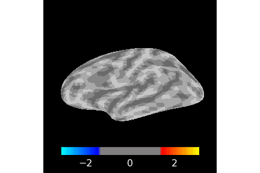

3D Brain Visualizations¶
Topographic map in 3D brain¶

from simpl_eeg import eeg_objects, topomap_3d_brain
import warnings
warnings.filterwarnings('ignore')
Note
Please include the line below in your IDE so that the changes would be simultaneously reflected when you make a change to the python scripts.
%load_ext autoreload
%autoreload 2
Define parameters¶
A detailed description of all parameters can be found in the topomap_2d.animate_topomap_2d docstring:
help(topomap_3d_brain.animate_matplot_brain)
Help on function animate_matplot_brain in module simpl_eeg.topomap_3d_brain:
animate_matplot_brain(epoch, stc='auto', views=['lat', 'dor', 'fro'], size=200, hemi='both', colormap='mne', colorbar=True, colormap_limit_type='lims', cmin=None, cmid=None, cmax=None, spacing='oct5', smoothing_steps=2, timestamp=True, frame_rate=12, **kwargs)
Creates an animated view of all timestamp observations an mne.epochs.Epochs data using a matplotlib backend.
If multiple views are used then speed becomes significantly slower. Colorbar placement may be inconsistent.
Parameters
----------
epoch : mne.epochs.Epochs or mne.evoked.EvokedArray
MNE epochs or evoked object containing portions of raw EEG data built around specified
timestamp(s) The inverse solution will be built based on the data in the specified epoch.
stc: mne.source_estimate.SourceEstimate or 'auto'
'inverse_solution' to generate the plot from. If set to "auto" (default) then an stc will be
automatically generated however, this will significantly increase running time.
views: str or list
Specifies the 'view' parameter in the mne.SourceEstimate.plot() function. For any backend
can be any combination of 'lat' (lateral), 'med' (medial), 'ros' (rostral), 'cau' (caudal),
'dor' (dorsal), 'ven'(ventral), 'fro'(frontal), 'par' (parietal). The following arguments
are also accepted but are NOT compatible with the matplotlib backend 'axi' (axial), 'sag'
(sagittal), and 'cor'(coronal). Defaults to ['lat', 'fro', 'dor'].
size: int
If using a non-matplotlib backend then specifies how many pixels tall EACH "view" of the brian will be.
If using matplotlib as a backend then the height will be divided by 100 and rounded the closest inch.
For example, entering 100 will result in 1 inch per view. If plotting multiple views overall size of
the multiplot is automatically calculated to fit all views. Defaults to 300.
hemi: 'lh’ or ‘rh’ or ‘both’ or ‘split’
Specifies the 'initial_time' parameter in the mne.SourceEstimate.plot() function. Can be
one of ‘lh’, ‘rh’, ‘both’, or ‘split’. Defaults to 'both'. Note that when using the matplotlib
backend that 'split' and 'both' will return a 'split' view since both is not avalible.
Defaults to 'both'
colormap: str or np.ndarray of float, shape(n_colors, 3 | 4)
Specifies the 'colormap' parameter in the mne.SourceEstimate.plot() function. Can use a
matplotlib colormap by name or take a custom look up table as input. Defaults to "mne"
colorbar: bool
Determines whether to include a colorbar on the plot not. Defaults to True.
colormap_limit_type: str
Can be either "lims" or "pos_lims". "lims" means that your cmin, cmid, and cmax values will specify the
"Lower, middle, and upper bounds for colormap". Using "pos_lims" will lead to cmin, cmid, and cmax representing
the "Lower, middle, and upper bound for colormap. Positive values will be mirrored directly across
zero during colormap construction to obtain negative control points." Defaults to "lims"
cmin: float
Specifies the lower value of the colormap limit. If no value is specified then
limits will be automatically calculated based on the mne.SourceEstimate.plot() function defaults OR
will be the negative value of cmax if only that is provided.
cmid: float
Specifies the middle value of the colormap limit. If no value is specified then
limits will be automatically calculated based on the mne.SourceEstimate.plot() function defaults OR
will be the value between cmin and cmax if one/both of them is provided.
cmax: float
Specifies the middle value of the colormap limit. If no value is specified then
limits will be automatically calculated based on the mne.SourceEstimate.plot() function defaults OR
will be the negative value of cmin if only that is provided.
spacing: str
Specifies the 'spacing' parameter in the mne.SourceEstimate.plot() function. "The spacing to use for the
source space. Can be 'ico#' for a recursively subdivided icosahedron, 'oct#' for a recursively subdivided
octahedron. In general, you can speed up the plotting by selecting a sparser source
space. Has no effect with mayavi backend. Defaults to ‘oct6’".
smoothing_steps: int
Specifies the 'smoothing_steps' parameter in the mne.SourceEstimate.plot() function. "The amount of smoothing".
3 by default.
timestamp: 'auto' or bool
Specifies whether or not to show the timestamp on the plot relative to the time in the epoch that
is being shown. Only works with 'matplotlib' set to the backend. Defaults to 'auto' which be True
if a matplotlib backend is being used and False otherwise.
frame_rate: int
The frame rate to render the animation at. Defautls to 12.
Returns
-------
ani: matplotlib.animation.FuncAnimation
Animation containing frames from all of the avalible times in the passed in epoch.
# change values belo to values of interest
experiment_folder = "../../data/109" # path to the experiment folder
nth_epoch = 0 # the epoch of interest
# 3D brain parameters
colormap = "RdBu_r"
Create epoched data¶
For additional options see Creating EEG Objects section.
epochs = eeg_objects.Epochs(experiment_folder)
epoch = epochs.get_nth_epoch(nth_epoch)
Reading /Users/sasha/mds/simpl_eeg_capstone/data/109/fixica.fdt
Not setting metadata
Not setting metadata
33 matching events found
Setting baseline interval to [-0.2998046875, 0.0] sec
Applying baseline correction (mode: mean)
0 projection items activated
Loading data for 33 events and 2049 original time points ...
0 bad epochs dropped
Create the topographic map in 3D brain¶
Note
Before an animation or plot can be generated a “forward” and “inverse” (abbreviated as “stc”) must first be generated. If they are not provided to either of the plotting animations they will be automatically generated HOWEVER this will increase the time it takes to generate the figure.
The forward/inverse are used to retrieve a brain model to attach the EEG data to and to do some of the mapping calculations. The forward downloads ‘fsaverage’ MRI data which represents a brain averaged out from dozens of different patients.
Generate Forward¶
fwd = topomap_3d_brain.create_fsaverage_forward(epoch)
0 files missing from root.txt in /Users/sasha/mne_data/MNE-fsaverage-data
0 files missing from bem.txt in /Users/sasha/mne_data/MNE-fsaverage-data/fsaverage
Source space : /Users/sasha/mne_data/MNE-fsaverage-data/fsaverage/bem/fsaverage-ico-5-src.fif
MRI -> head transform : /opt/miniconda3/lib/python3.8/site-packages/mne/data/fsaverage/fsaverage-trans.fif
Measurement data : instance of Info
Conductor model : /Users/sasha/mne_data/MNE-fsaverage-data/fsaverage/bem/fsaverage-5120-5120-5120-bem-sol.fif
Accurate field computations
Do computations in head coordinates
Free source orientations
Reading /Users/sasha/mne_data/MNE-fsaverage-data/fsaverage/bem/fsaverage-ico-5-src.fif...
Read 2 source spaces a total of 20484 active source locations
Coordinate transformation: MRI (surface RAS) -> head
0.999994 0.003552 0.000202 -1.76 mm
-0.003558 0.998389 0.056626 31.09 mm
-0.000001 -0.056626 0.998395 39.60 mm
0.000000 0.000000 0.000000 1.00
Read 19 EEG channels from info
Head coordinate coil definitions created.
Source spaces are now in head coordinates.
Setting up the BEM model using /Users/sasha/mne_data/MNE-fsaverage-data/fsaverage/bem/fsaverage-5120-5120-5120-bem-sol.fif...
Loading surfaces...
Loading the solution matrix...
Three-layer model surfaces loaded.
Loaded linear_collocation BEM solution from /Users/sasha/mne_data/MNE-fsaverage-data/fsaverage/bem/fsaverage-5120-5120-5120-bem-sol.fif
Employing the head->MRI coordinate transform with the BEM model.
BEM model fsaverage-5120-5120-5120-bem-sol.fif is now set up
Source spaces are in head coordinates.
Checking that the sources are inside the surface and at least 5.0 mm away (will take a few...)
Skipping interior check for 2433 sources that fit inside a sphere of radius 47.7 mm
Skipping solid angle check for 0 points using Qhull
Skipping interior check for 2241 sources that fit inside a sphere of radius 47.7 mm
Skipping solid angle check for 0 points using Qhull
Setting up for EEG...
Computing EEG at 20484 source locations (free orientations)...
Finished.
Generate Inverse¶
stc = topomap_3d_brain.create_inverse_solution(epoch, fwd)
Computing rank from data with rank=None
Using tolerance 1.3e-11 (2.2e-16 eps * 19 dim * 3.1e+03 max singular value)
Estimated rank (eeg): 19
EEG: rank 19 computed from 19 data channels with 0 projectors
Reducing data rank from 19 -> 19
Estimating covariance using EMPIRICAL
Done.
Estimating covariance using SHRUNK
Done.
Using cross-validation to select the best estimator.
Number of samples used : 2049
log-likelihood on unseen data (descending order):
shrunk: -44.511
empirical: -153.792
selecting best estimator: shrunk
[done]
Converting forward solution to surface orientation
No patch info available. The standard source space normals will be employed in the rotation to the local surface coordinates....
Converting to surface-based source orientations...
[done]
Computing inverse operator with 19 channels.
19 out of 19 channels remain after picking
Selected 19 channels
Creating the depth weighting matrix...
19 EEG channels
limit = 20485/20484 = 9.583809
scale = 9.50316e+09 exp = 0.8
Applying loose dipole orientations to surface source spaces: 0.2
Whitening the forward solution.
Computing rank from covariance with rank=None
Using tolerance 1.9e-13 (2.2e-16 eps * 19 dim * 46 max singular value)
Estimated rank (eeg): 19
EEG: rank 19 computed from 19 data channels with 0 projectors
Setting small EEG eigenvalues to zero (without PCA)
Creating the source covariance matrix
Adjusting source covariance matrix.
Computing SVD of whitened and weighted lead field matrix.
largest singular value = 2.82049
scaling factor to adjust the trace = 9.08847e+26 (nchan = 19 nzero = 0)
Preparing the inverse operator for use...
Scaled noise and source covariance from nave = 1 to nave = 1
Created the regularized inverter
The projection vectors do not apply to these channels.
Created the whitener using a noise covariance matrix with rank 19 (0 small eigenvalues omitted)
Computing noise-normalization factors (dSPM)...
[done]
Picked 19 channels from the data
Computing inverse...
Eigenleads need to be weighted ...
Processing epoch : 1 / 1
[done]
Generate figure with pyvista backend (NOT CURRENTLY WORKING)¶
#pyvista_brain_fig = topomap_3d_brain.plot_topomap_3d_brain(epoch, stc = stc, backend = 'pyvista')
Save animation with pyvista backend (NOT CURRENTLY WORKING)¶
#topomap_3d_brain.save_animated_topomap_3d_brain(pyvista_brain_fig, filename = "brain_animation.gif")
Generate figure with matplotlib backend (recommended)¶
%%capture
matplot_brain_fig = topomap_3d_brain.plot_topomap_3d_brain(epoch, stc = stc, backend = 'matplotlib')
Save the figure¶
# You could change the plot to different formats by changing the format argument in the function.
# It supports 'png', 'pdf', 'svg'.
file_path = "../../exports/examples/topomap_3d_brain.svg" # change the file path to where you would like to save the file
matplot_brain_fig.savefig(file_path, format= 'svg')
Generate animation with matplotlib backend (slow but recommended)¶
%%capture
matplotlib_animation = topomap_3d_brain.animate_matplot_brain(epoch, stc = stc, views = 'lat', hemi = 'lh')
from IPython.display import HTML
video = HTML(matplotlib_animation.to_jshtml())
video
Save as gif¶
%%capture
anim_brain = topomap_3d_brain.animate_matplot_brain(epoch, stc = stc, views = 'lat', hemi = 'lh')
gif_file_path = "../../exports/examples/topomap_3d_brain.gif" # change the file path to where you would like to save the file
anim_brain.save(gif_file_path, fps=5, dpi=300)
Save as mp4¶
%%capture
mp4_file_path = "../../exports/examples/topo_2d.mp4" # change the file path to where you would like to save the file
anim_brain.save(mp4_file_path, fps=5, dpi=300)
Note
If FFMpegWriter does not work on your computer you can save the file as a gif first and then convert it into mp4 file by running the code below.
import moviepy.editor as mp
clip = mp.VideoFileClip(gif_file_path) # change the file path to where you saved the gif file
clip.write_videofile(mp4_file_path) # change the file path to where you would like to save the mp4 file